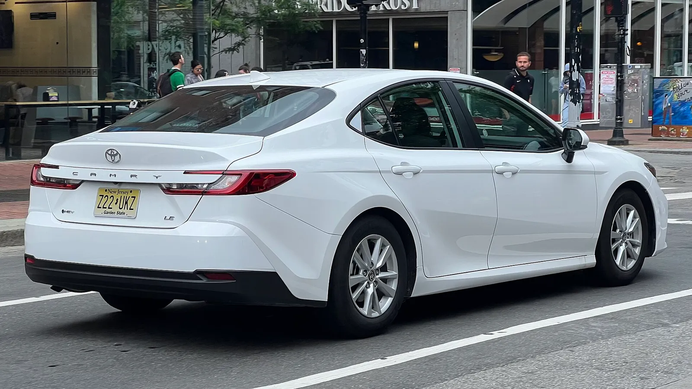
▲ 미국에서 촬영된 신형 토요타 캠리. 9월 2만5350대가 팔렸다 ⓒ S5A-0043 (Wikimedia Commons, CC BY 2.0)
"세단은 죽었다"던 2018년의 선언이 2026년 9월 판매표 앞에서 흔들리고 있다. 미국 매체 카버즈(CarBuzz)는 10월 3일 "세단을 버린 제조사들이 지금 그 결정을 후회하고 있다"는 기사를 냈다. 카프리즘이 토요타·혼다·현대차·기아의 9월 공식 판매자료를 직접 열어 확인한 결과, 공식 수치가 모두 확인되는 세단 6개 차종(캠리·코롤라·엘란트라·K4·K5·쏘나타)의 합계는 8만2501대로 전년 동월(7만4627대)보다 10.6% 늘었다. 다만 세단이 SUV를 다시 앞질렀다는 이야기는 아니다. 어디까지가 사실이고 어디부터가 해석인지를 표로 나눠봤다.
카버즈의 원문은 카버즈 기사 바로가기에서 볼 수 있다. 이 글은 번역이 아니라 제조사 자료로 수치를 재검증하고 '세단 비중'을 새로 계산한 것이다. 기존 기사 가운데 K4와 코롤라의 미국 비교, 크라운과 캠리의 재고 비교와는 다루는 각도가 달라 겹치지 않는다. RAV4 쪽 사정은 RAV4 PHEV 시승 기사, 닛산의 실적 흐름은 닛산 2분기 실적 기사에서 따로 볼 수 있다.
1. 카버즈 주장부터 — '후회'는 누구의 말인가
카버즈 기사 제목은 "The Automakers That Killed Sedans Are Really Regretting That Decision Right Now"(10월 3일)다. 기사는 "세단이 돌아온다는 것은 물가가 비싸고 구매자들이 부담을 느끼고 있다는 뜻"이라고 풀이하며, 포드와 GM이 세단을 너무 일찍 포기했다고 본다. 이 부분은 매체의 해석이다. 포드나 GM 경영진이 "후회한다"고 공식적으로 밝힌 발언은 이번 조사에서 확인하지 못했다.
카프리즘이 따로 확인한 것은 숫자다. 아래 표는 카버즈가 인용한 수치와 제조사 공식 자료가 어디서 갈리는지 정리한 것이다.
| 항목 | 카버즈 | 공식 자료 | 판단 |
|---|---|---|---|
| 캠리 1~9월 누적 | 260,284대 | 260,684대(토요타 9월 판매표) | 카버즈 오기로 보임(400대 차이) |
| 어코드 9월 | 15,507대 | 16,507대(혼다 발표 요약, 굿카배드카도 동일) | 1,000대 차이, 공식 수치 채택 |
| 코롤라 9월·연간 | 9월 19,365대(+4.9%), 연간 +8.4% | 9월 19,365대(+4.9%), 1~9월 누적 +8.4% | 일치(카버즈는 9월과 연간 증감률을 정확히 구분) |
| 엘란트라 9월 | 13,902대(+1%) | 13,902대(+1%) | 일치 |
| K4 9월 | 12,658대(+43%) | 12,658대(+43%) | 일치 |
| 쏘나타 9월 | +39% | 5,156대(+39%, 전년 3,722대) | 일치 |
| 마즈다3·WRX·인테그라 | 2,794대·1,703대·1,541대 | 공식 자료 직접 확인 못 함 | 카버즈 인용으로만 표기 |
📍 '증감률'이 두 가지인 이유
토요타 표는 '일평균(DSR)'과 '물량(VOL)' 두 가지 증감률을 함께 싣는다. 2026년 9월은 영업일이 25일, 2025년 9월은 24일이었다. 캠리는 물량 기준 +3.4%지만 일평균으로는 -0.8%다. 코롤라도 물량 +4.9%, 일평균 +0.7%다. 보도에 나오는 증감률은 대부분 물량 기준이라, 영업일이 하루 더 있었던 효과가 섞여 있다는 점을 알아두면 좋다.
2. 토요타·혼다 — 공식 표로 본 9월 세단
토요타 북미법인(TMNA)은 10월 1일 9월·3분기 판매를 발표했고, 첨부 PDF 판매표에서 모델별 수치를 볼 수 있다. 9월 전체 판매는 20만1306대(+8.4%), 3분기는 63만3223대(+0.6%)였다. 혼다 북미법인은 같은 날 "2020년 이후 최고의 9월, 2019년 이후 최고의 3분기"라고 발표했다. 두 회사의 세단 수치를 한 표로 묶었다.
| 모델 | 2026년 9월 | 전년 동월 | 증감(물량) | 1~9월 누적 |
|---|---|---|---|---|
| 토요타 캠리 | 25,350 | 24,521 | +3.4%(일평균 -0.8%) | 260,684 (+11.2%) |
| 토요타 코롤라 | 19,365 | 18,457 | +4.9%(일평균 +0.7%) | 195,141 (+8.4%) |
| 토요타 프리우스 | 3,169 | 3,813 | -16.9% | 29,223 (-37.5%) |
| 토요타 크라운(세단) | 406 | 1,139 | -64.4% | 6,683 (-23.1%) |
| 혼다 어코드 | 16,507 | 약 12,926(역산) | +27.7%(혼다 발표 요약) | 1~9월 +32.7% |
| 혼다 시빅 | 17,724 | 약 16,351(역산) | +8.4%(혼다 발표 요약) | 확인 못 함(비공식 집계 195,135) |
어코드와 시빅의 전년 동월 수치는 혼다 발표의 증감률로 카프리즘이 역산한 추정값이다. 캠리는 토요타 표의 '캠리 하이브리드' 행이 25,350대로 '캠리' 행과 같아, 9월 판매 전량이 하이브리드였다. 반면 프리우스는 1~9월 37.5% 줄었고 크라운 세단은 9월 64.4% 줄었다. '세단 부활'이라기보다 캠리·어코드·코롤라·시빅 같은 핵심 차종에 수요가 몰리는 양상에 가깝다. 크라운과 캠리의 격차는 크라운이 캠리에게 지고 있는 이유 기사에서 재고 중심으로 다뤘다. 캠리가 터보 없이 하이브리드만 남긴 선택은 캠리 하이브리드 전용 기사에서 짚었다.
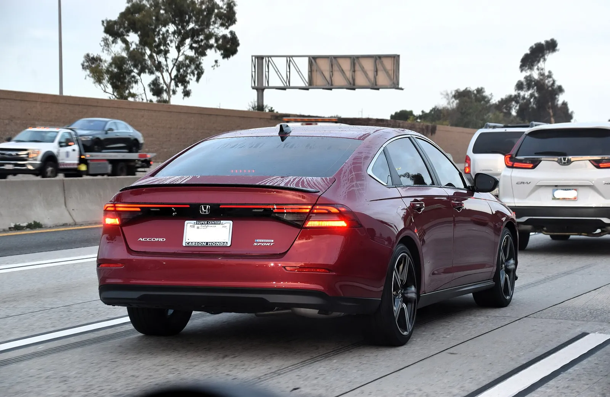
▲ 도로를 달리는 혼다 어코드 스포츠 하이브리드(2023년 촬영, 후면). 혼다 발표 요약에 따르면 3분기 기준 어코드 판매의 44%가 하이브리드다 ⓒ Charles from Port Chester, New York (Wikimedia Commons, CC BY 2.0)
3. 현대·기아 — 쏘나타 +39%, K4 +43%의 이면
현대차 미국법인 발표에 따르면 9월 판매는 7만7439대(+9%), 1~9월 누적 69만7464대(+3%)였다. 기아 미국법인은 9월 7만7009대(+18%)로 역대 9월 최고, 3분기 23만6659대(+8%)로 분기 최고 기록을 세웠다. 세단은 이 기록의 주역은 아니지만 증가율은 가장 눈에 띈다.
| 모델 | 2026년 9월 | 전년 동월 | 증감 | 비고 |
|---|---|---|---|---|
| 현대 엘란트라 | 13,902 | 13,808 | +1% | 3분기 48,764(+18%), 1~9월 128,603(+11%) |
| 현대 쏘나타 | 5,156 | 3,722 | +39% | 3분기 17,273(+34%), 1~9월 54,330(+18%) |
| 기아 K4 | 12,658 | 약 8,829(역산) | +43% | 기아는 '핵심 8개 모델 두 자릿수 성장'에 K4를 포함. 전년 동월은 증감률로 카프리즘이 역산 |
| 기아 K5 | 6,070 | 약 5,290(역산) | +15% | 기아 발표 요약 기준. 전년 동월은 증감률로 카프리즘이 역산 |
| 합계(4개 모델) | 37,786 | 31,649 | +19.4% | 카프리즘 계산 |
쏘나타는 +39%이지만 절대량은 5,156대로 엘란트라의 37% 수준이다. 엘란트라는 9월 +1%로 사실상 정체이고, 3분기 +18%와 대비된다. 9월만 보면 '현대 세단 전체가 폭증'이라는 서술은 과장이다. 한편 기아 K4는 9월에 전년 동월보다 3,829대 늘었는데, 이는 같은 달 기아 전체 증가분의 약 33%에 해당한다(전체 증가분은 +18%에서 역산한 약 11,747대 기준, 추정). K4가 코롤라와 어떻게 맞서는지는 K4 vs 코롤라 미국 비교, 쏘나타 상품성은 쏘나타 디 엣지 기사에 있다.
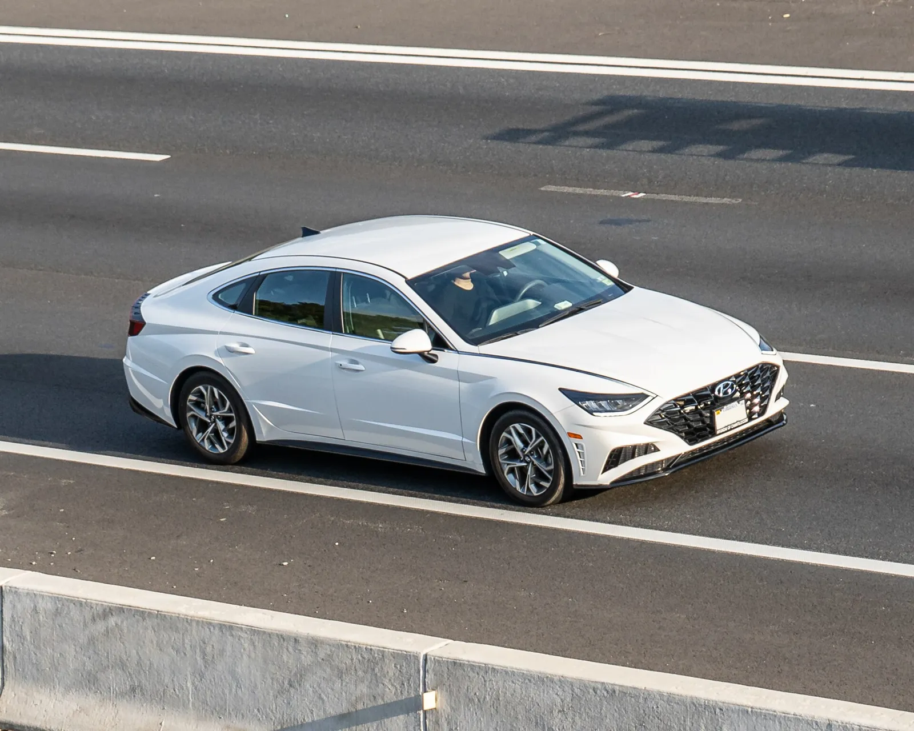
▲ 미국에서 촬영된 현대 쏘나타(DN8 세대). 촬영 연식과 부분변경 여부는 확정하지 않았다 ⓒ OWS Photography (Wikimedia Commons, CC BY 4.0)
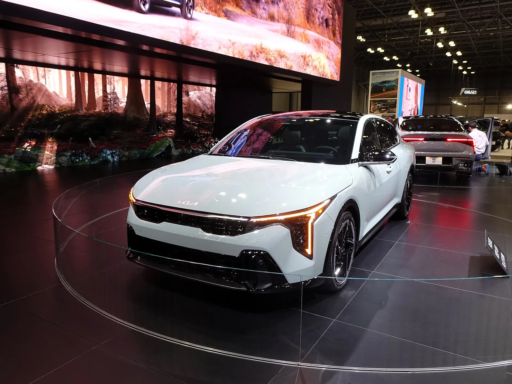
▲ 북미 전시장의 2025년형 기아 K4 GT 라인. 9월 미국 판매 1만2658대(+43%) ⓒ Charles (Wikimedia Commons, CC BY 2.0)
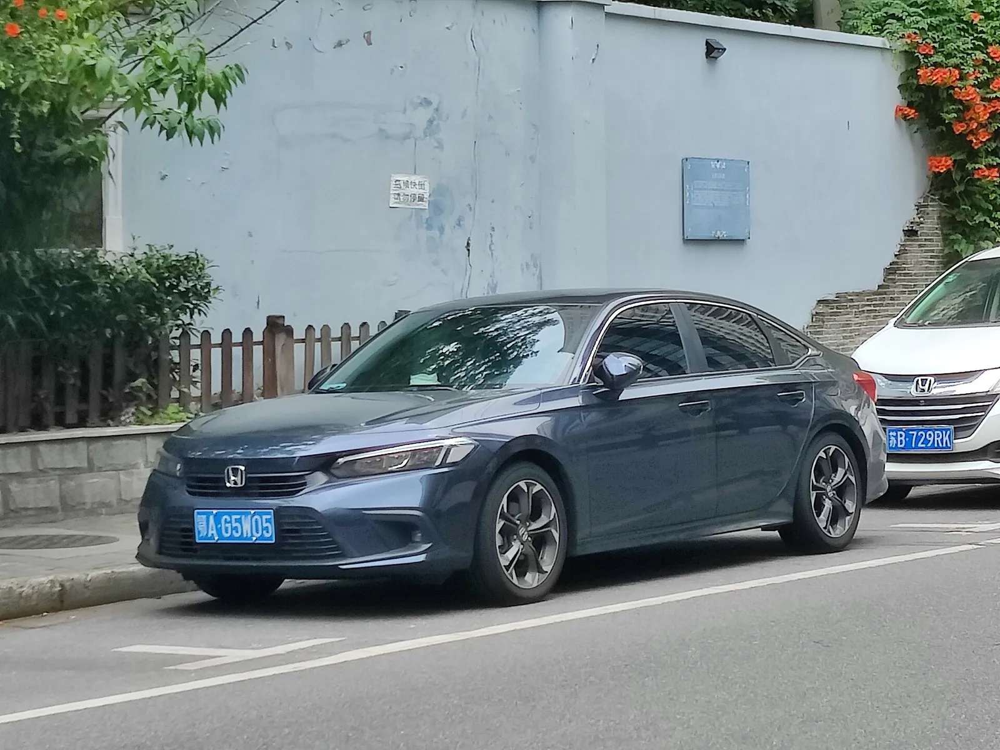
▲ 혼다 시빅 11세대 세단. 중국 번호판 차량이라 미국 사양과 세부가 다를 수 있다 ⓒ Zotyefan (Wikimedia Commons, CC BY-SA 4.0)
4. 세단이 늘어도 비중은 3할 — 카프리즘 계산
카버즈는 세단 '부활'을 강조하지만, 전체 판매에서 세단이 차지하는 비중은 아직 작다. 제조사가 '승용차(Car)'와 '트럭(SUV·픽업·미니밴)'으로 나눈 자료로 계산했다. 토요타·혼다 수치는 공식 표 기준이고, 현대·기아는 세단 모델만 더한 카프리즘 계산이다. 승용차에는 세단 외 스포츠카 등이 일부 섞여 있다는 점은 감안해야 한다.
| 제조사·기준 | 승용차 판매 | 전체 판매 | 승용차 비중 | 비고 |
|---|---|---|---|---|
| 토요타 북미법인 9월 | 54,206 | 201,306 | 26.9% | 렉서스 승용차 포함, 트럭 147,100대(73.1%) |
| 토요타 북미법인 1~9월 | 534,127(+1.2%) | 1,876,614 | 28.5% | 전년 같은 기간 28.3%(527,585/1,865,876) |
| 혼다 9월 | 36,207(+14.8%) | 121,796 | 29.7% | 라이트 트럭 85,589대(+16.4%) |
| 혼다 3분기 | 125,353(+18.4%) | 392,341 | 32.0% | 라이트 트럭 266,988대(+5.5%) |
| 혼다 1~9월 | 364,759(+15.6%) | 1,149,261 | 31.7% | 전년 약 28.7%로 역산(추정), 트럭 +0.3% |
| 현대(엘란트라+쏘나타) 9월 | 19,058 | 77,439 | 24.6% | 전년 24.7%(17,530/71,003, 전년 전체 판매는 보도자료에 없어 역산 추정). 아이오닉 6 등 제외 |
| 기아(K4+K5) 9월 | 18,728 | 77,009 | 24.3% | 전년 약 21.6%(전년 전체는 +18%에서 역산한 추정) |
✅ 이 표에서 읽을 수 있는 것
· 혼다는 1~9월 승용차가 +15.6%, 트럭이 +0.3%로 격차가 크다. 비중으로는 약 3%p 오른 셈이다
· 토요타는 승용차 비중이 28.3%에서 28.5%로 거의 그대로다. 캠리가 늘었지만 RAV4(1~9월 -29.2%)가 줄면서 전체 믹스는 크게 바뀌지 않았다
· 현대는 세단 비중이 정체, 기아는 K4 덕분에 상승했다
· 계산한 어느 회사도 승용차 비중이 33%를 넘지 않는다. 'SUV 시대의 종료'가 아니라 '세단 바닥에서의 반등'이다
RAV4 변수 — 토요타 승용차 비중이 제자리인 이유
토요타 판매표를 보면 캠리가 1~9월 누적에서 RAV4를 앞섰다. 다만 이것이 '세단이 SUV를 눌렀다'는 뜻은 아니다. 숫자를 나눠 보면 이렇다.
| 항목 | 2026년 1~9월 | 2025년 1~9월 | 증감 | 증감 물량 |
|---|---|---|---|---|
| 캠리 | 260,684 | 234,426 | +11.2% | +26,258 |
| RAV4 | 253,664 | 358,134 | -29.2% | -104,470 |
| 코롤라 | 195,141 | 179,983 | +8.4% | +15,158 |
| 승용차 합계(렉서스 포함) | 534,127 | 527,585 | +1.2% | +6,542 |
| 트럭 합계(렉서스 포함) | 1,342,487 | 1,338,291 | +0.3% | +4,196 |
| RAV4 제외 트럭(카프리즘 계산) | 1,088,823 | 980,157 | +11.1% | +108,666 |
캠리가 RAV4를 앞선 폭은 7,020대(2.8%)다. 전년 같은 기간에는 RAV4가 123,708대 앞서 있었으니, 순위 역전의 대부분은 캠리의 증가(+26,258대)가 아니라 RAV4의 감소(-104,470대)에서 나왔다. 9월 한 달만 보면 RAV4 34,192대(-6.6%)가 캠리 25,350대보다 8,842대 많아 다시 앞선다. 일부 보도는 RAV4 감소를 신형 전환기의 공급 제약 탓으로 설명하지만, 카프리즘이 토요타 공식 자료에서 그 원인을 확인한 것은 아니다.
이 감소가 비중 계산에 주는 영향을 가정으로 풀어 보면, RAV4가 전년 수준(358,134대)을 유지했고 줄어든 104,470대가 그대로 추가 판매됐다고 가정할 때 전체 판매는 1,876,614 + 104,470 = 1,981,084대, 승용차 비중은 534,127 ÷ 1,981,084 = 26.96%다. 실제 28.46%보다 약 1.5%p 낮다. 거꾸로 말하면 토요타의 승용차 비중이 28.3%에서 28.5%로 '유지'된 것은 세단이 SUV를 따라잡아서가 아니라 가장 많이 팔리던 SUV 한 차종이 줄어든 효과가 크다. RAV4를 뺀 나머지 트럭은 오히려 +11.1% 늘어, 같은 기간 승용차 증가율(+1.2%)의 9배가 넘는다. 이 계산은 공급 사정이 달랐을 경우를 단순화한 가정이며 실제 수요 대체 관계는 반영하지 않았다.
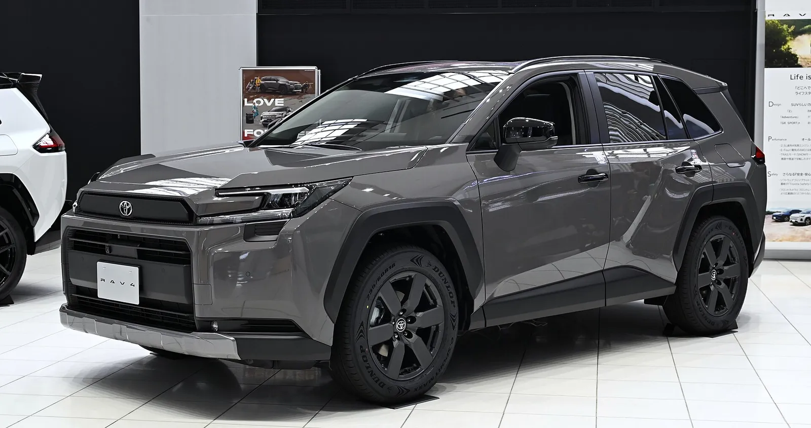
▲ 전시장의 6세대 토요타 RAV4 하이브리드 어드벤처(파일명 기준 2025년 촬영). 촬영 지역과 미국 사양 여부는 확정하지 않았다 ⓒ TTTNIS (Wikimedia Commons, CC0)
5. 세단을 접은 제조사들 — 무엇이 얼마나 사라졌나
카버즈가 '후회' 대상으로 꼽은 것은 포드와 GM이다. 두 회사와 FCA(현 스텔란티스)의 세단 철수는 이렇게 정리된다. 아래는 확인된 보도 기준이며, 판매량 비교가 가능한 것은 크라이슬러 200뿐이었다.
| 제조사 | 철수 내용 | 확인된 근거 |
|---|---|---|
| 포드 | 2018년 4월 "차세대 전통 세단에 투자하지 않겠다" 발표. 퓨전·포커스·피에스타·타우러스가 대상, 머스탱과 신형 포커스 액티브 크로스오버만 유지. 2020년까지 북미 라인업의 약 90%를 트럭·유틸리티·상용으로 구성한다는 목표를 함께 제시 | 2018.4 포드 발표(NPR 원문에서 인용문 직접 확인) |
| GM | 크루즈 2019년, 임팔라 2020년 단종. 말리부는 2024년 11월 15일 생산 종료 | 캔자스 페어팩스 공장은 약 3억 9,000만 달러를 들여 볼트 EV 생산으로 전환(GM 오서리티) |
| FCA(크라이슬러·닷지) | 크라이슬러 200은 2016년 12월 생산 종료, 닷지 다트도 2016년 단종 | 200 판매량 2015년 177,889대에서 2016년 62,185대로 -65.0%(슬래시기어 인용 수치) |
FCA의 세르지오 마르키온네 당시 CEO는 200 생산이 끝난 지 한 달 뒤인 2017년 1월 디트로이트 오토쇼에서 200과 다트를 두고 "그 두 차만큼 나쁜 투자는 모른다"(I don't know one investment that was as bad as these two were)고 평가했다(슬래시기어 인용). 여기서 중요한 사실은 철수 당시에는 세단 판매가 실제로 급락하고 있었다는 점이다. 당시 선택을 '후회'로 부르려면 지금의 반등이 구조적인지부터 따져야 한다.
포드의 경우는 결이 조금 다르다. NPR이 보도한 포드 발표 시점의 2018년 누적 판매는 퓨전 43,176대, 포커스 35,046대, 머스탱 19,164대였다. 퓨전과 포커스를 합치면 78,222대로 머스탱의 약 4.1배다. 포드는 철수 이유를 "수요 감소와 제품 수익성"이라고 밝혔는데, 이는 판매 규모가 작아서라기보다 이익이 남지 않는다는 판단이었다는 뜻이다. 2026년 9월의 세단 반등이 포드 같은 회사에 실제로 '놓친 기회'였는지는 차종별 수익성 자료 없이는 판단할 수 없다.
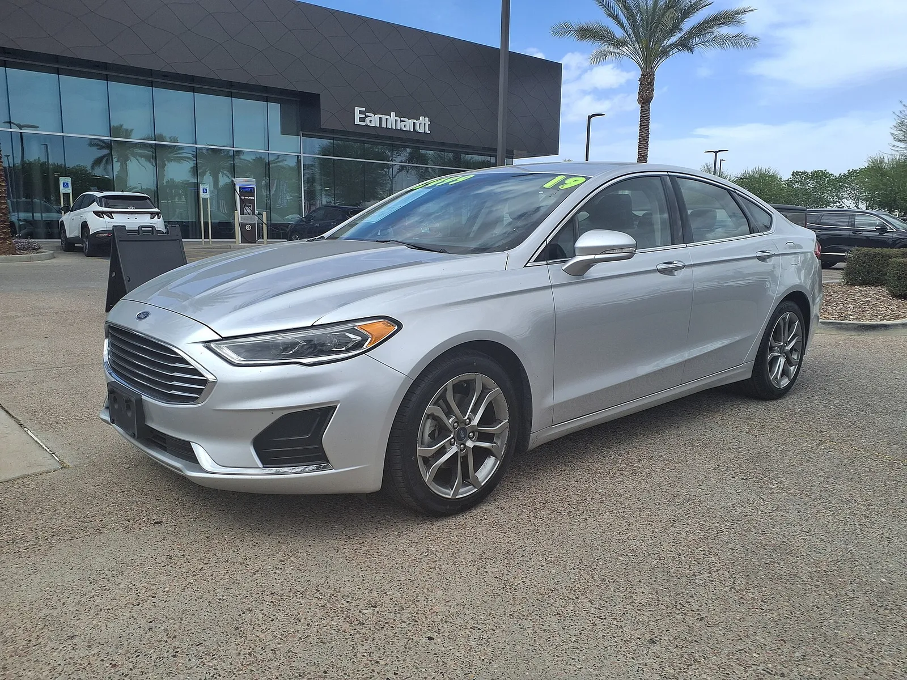
▲ 딜러 앞에 주차된 포드 퓨전 SEL(2019년형으로 표기된 개인 촬영본). 포드는 2018년 퓨전·포커스 등의 세단 철수를 발표했다 ⓒ HJUdall (Wikimedia Commons, CC0)
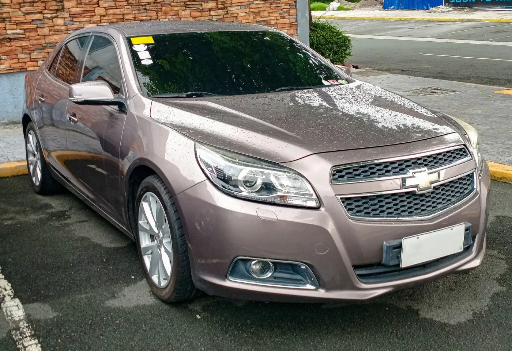
▲ 이전 세대로 보이는 쉐보레 말리부 세단(연식 미확정). 말리부는 2024년 11월 생산이 끝났다 ⓒ Ethan Llamas (Wikimedia Commons, CC BY-SA 4.0)
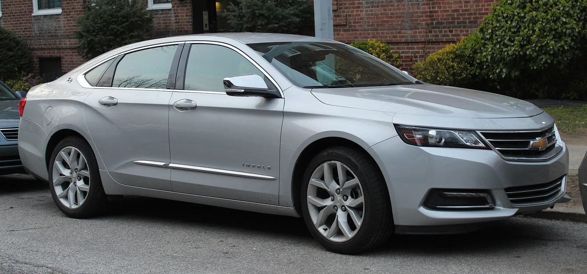
▲ 2018년형 쉐보레 임팔라 프리미어(미국 촬영). 임팔라는 2020년 단종됐다 ⓒ Kevauto (Wikimedia Commons, CC BY-SA 4.0)
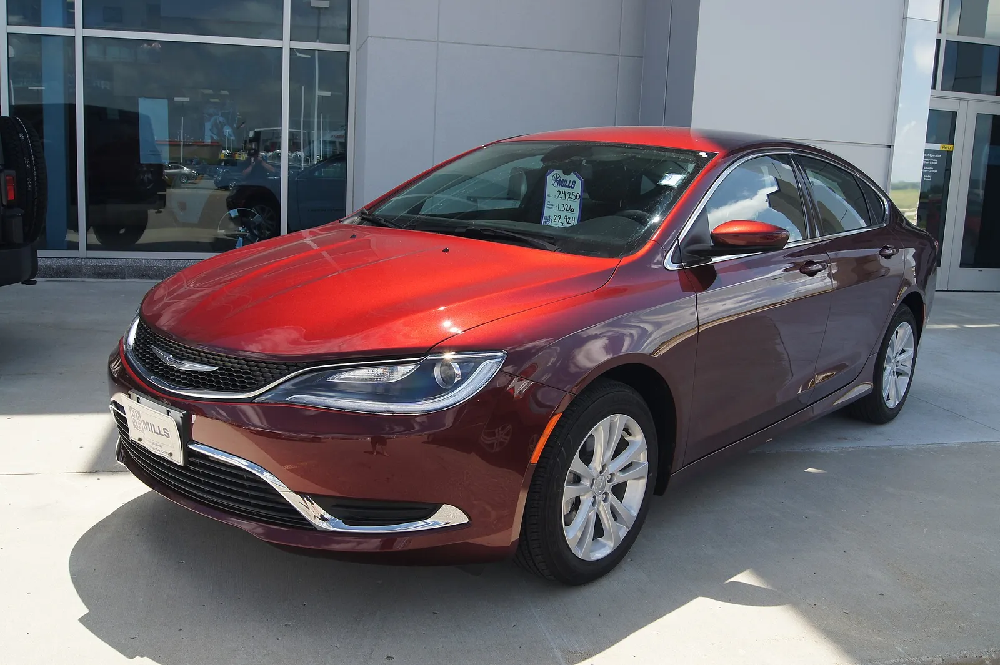
▲ 2015년형 크라이슬러 200 리미티드. 2016년 12월 생산이 끝났다 ⓒ Greg Gjerdingen (Wikimedia Commons, CC BY 2.0)
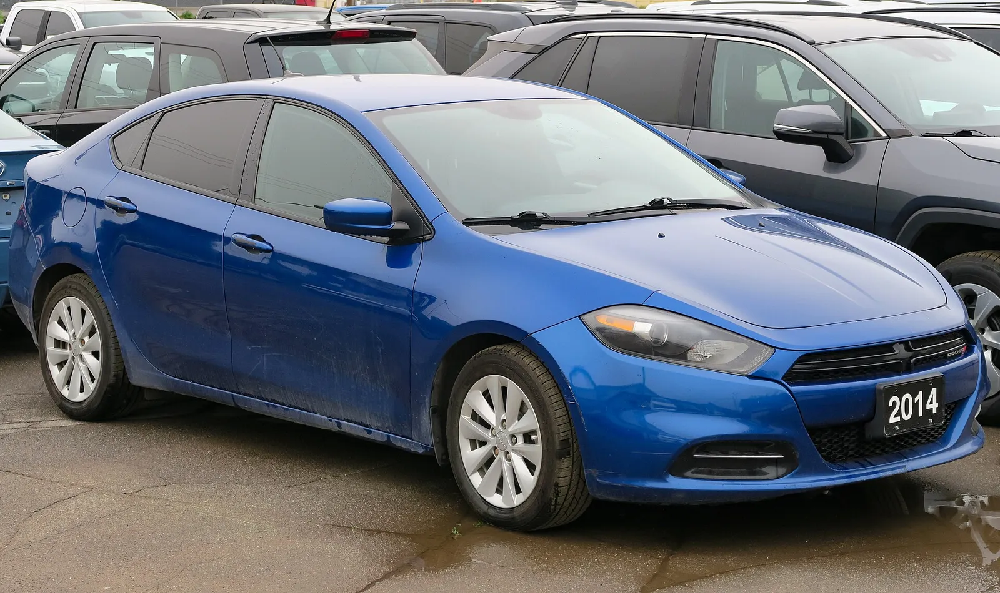
▲ 2014년형 닷지 다트(촬영 차량 표기 기준). 다트는 2016년 단종됐다 ⓒ Elise240SX (Wikimedia Commons, CC BY-SA 4.0)
6. 반등의 이유 — 가격과 하이브리드, 그리고 '남은 자의 몫'
카버즈는 세단 반등의 배경을 가격 부담에서 찾는다. 이 해석을 뒷받침하거나 약화하는 요소를 따로 정리했다.
| 요인 | 근거 | 한계 |
|---|---|---|
| 하이브리드 보급 | 캠리 전량 하이브리드, 어코드 44%·시빅 35%가 하이브리드(혼다 발표 요약, 3분기 기준) | 하이브리드는 SUV에도 있어 세단만의 장점은 아님 |
| 전동화 비중 | 토요타 북미법인 9월 전동화 차량 117,215대(전체의 58.2%), 1~9월 1,038,114대(55.3%). 혼다는 3분기 하이브리드 '10만 6,000대 이상'으로 3분기 판매 392,341대의 약 27% 이상. 현대차는 9월 판매의 28%가 하이브리드(각 사 공식 자료, 비중은 카프리즘 계산) | 전동화 수치에는 SUV가 포함돼 세단 몫을 분리할 수 없음 |
| 가격 부담 | 카버즈의 해석("물가가 비싸고 구매자들이 부담") | 제조사 공식 자료에서 가격 때문이라는 설명은 확인하지 못함 |
| 경쟁 감소 | 포드·GM·FCA가 철수해 남은 세단 시장을 토요타·혼다·현대·기아가 나눠 가짐(카프리즘 해석) | 철수 시점과 9월 증가의 직접 인과는 입증되지 않음 |
| 신차 효과 | K4가 새로 투입된 차종이고 어코드·쏘나타도 비교적 최근 세대 | 일시적일 수 있음 |
| 영업일 차이 | 2026년 9월 25일 vs 전년 24일(토요타 표) | 일평균으로 환산하면 증가율이 낮아짐 |
카프리즘의 해석은 이렇다. 세단 시장에서 포드·GM·FCA가 빠지자 남은 일본·한국 브랜드가 점유율을 나눠 가졌고, 하이브리드가 연료비 부담을 낮춰 주면서 신차 효과와 맞물렸다는 것이다. 다만 이것은 추정이다. 한편 철수한 브랜드들이 세단 라인업을 되돌리려는 움직임은 있다. 쉐보레 카마로의 4도어 부활 가능성은 카마로 세단 부활 기사에서, 포드 머스탱 4도어 소식은 머스탱 4도어 기사에서 다뤘다. 미국에서 점점 사라지는 후륜구동 V8 세단은 마지막 V8 세단 기사에 있다.
7. 확인하지 못한 것과 앞으로 볼 지표
| 항목 | 상태 |
|---|---|
| 닛산 센트라·알티마 3분기 | 닛산 공식 3분기 발표는 직접 확인하지 못함(닛산 미국 뉴스룸 판매 채널 주소는 404, 검색에서도 3분기 발표문이 나오지 않음). 카버즈 인용 기준 센트라 3분기 3만6890대(-8.3%, 연간 -10.6%), 알티마는 보합이어서 '세단 전체 부활'과는 거리가 있음. 참고로 굿카배드카 집계의 상반기 누적은 센트라 75,549대, 알티마 42,288대이며, 알티마 '보합'이 어느 기간 기준인지는 카버즈 요약만으로 확정하지 못함 |
| 포드·GM 경영진의 후회 발언 | 확인하지 못함(카버즈의 해석). 카버즈 원문에도 포드·GM 관계자의 직접 인용은 없고 "포드와 GM이 포기한 부문"이라는 서술만 있음. 포드의 2018년 발표 인용문은 NPR 원문에서 확인 |
| 시빅 9월 증감률 원자료 | 혼다 발표 본문에서 9월 17,724대(+8.4%)를 직접 확인. 1~9월 누적은 공식 수치를 확인하지 못함 |
| 마즈다3·서브루 WRX·아큐라 인테그라 | 카버즈 인용으로만 표기 |
| 10월 이후 지속 여부 | 10월 판매는 11월 초 발표 예정, 추세 판단은 이르다 |
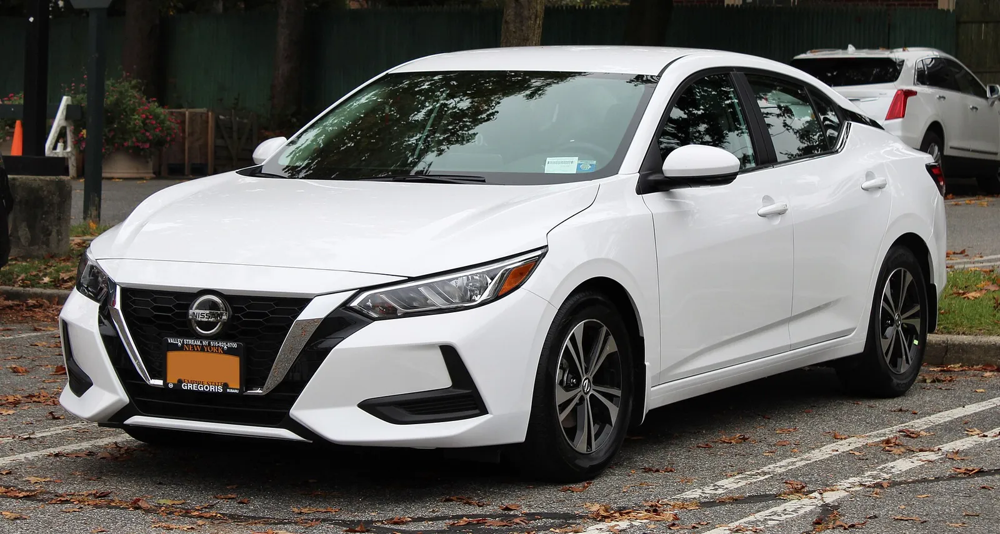
▲ 2020년형 닛산 센트라 SV(8세대). 닛산 공식 3분기 발표는 확인하지 못해 본문에는 카버즈 인용 수치만 실었다 ⓒ Kevauto (Wikimedia Commons, CC BY-SA 4.0)
세단이 SUV를 대체하는 장면은 아직 어느 표에서도 나오지 않는다. 다음에 볼 지표는 두 가지다. 4분기에도 캠리·어코드의 증가율이 두 자릿수를 유지하는지, 그리고 현대차·기아의 세단 비중이 24%대에서 더 오르는지다.
8. 자주 묻는 질문
| 질문 | 답 |
|---|---|
| 세단이 SUV보다 많이 팔리나? | 아니다. 승용차 비중은 토요타 1~9월 28.5%, 혼다 1~9월 31.7%다. 트럭·SUV가 여전히 7할 안팎이다. |
| 캠리가 RAV4를 이겼다는 말은 맞나? | 1~9월 누적으로는 맞다(260,684대 대 253,664대). 다만 9월 한 달은 RAV4가 34,192대로 더 많고, 역전의 주된 이유는 RAV4가 104,470대 줄어든 데 있다. |
| 카버즈 숫자는 믿어도 되나? | 카프리즘이 대조한 항목 가운데 어코드 9월(15,507대)과 캠리 누적(260,284대) 2건이 공식 자료와 달랐고 코롤라·엘란트라·K4·쏘나타는 일치했다. 인용할 때는 제조사 원자료를 함께 보는 편이 안전하다. |
| 한국 운전자에게 의미가 있나? | 쏘나타·엘란트라·K4·K5의 미국 판매(9월 37,786대, +19.4%)는 미국 시장 기준 수치이며 국내 판매와는 별개다. 국내 구매 판단에 직접 쓰기보다 글로벌 세단 수요 흐름을 읽는 참고 자료로 보는 것이 맞다. |
9. 요약
2026년 9월 미국 세단 판매는 분명히 늘었다. 공식 자료로 확인되는 6개 차종(캠리·코롤라·엘란트라·K4·K5·쏘나타) 합계는 8만2501대로 전년보다 10.6% 늘었다. 쏘나타(+39%)와 K4(+43%)가 증가율을 끌었고 캠리는 1~9월 +11.2%, 어코드는 +32.7%다.
그러나 '세단 부활'은 비중 기준으로는 아직 이르다. 승용차 비중은 토요타 26.9%(9월), 혼다 29.7%(9월)로 판매의 70% 안팎이 트럭·SUV다. 카버즈의 어코드 9월(15,507대)·캠리 누적(260,284대) 2건은 공식 자료와 달라 카프리즘이 정정했다(코롤라 등 나머지는 일치). 토요타는 RAV4가 1~9월 -29.2%로 줄어 캠리가 누적 7,020대 앞섰는데, RAV4가 전년 수준이었다고 가정하면 승용차 비중은 26.96%로 내려간다.
포드·GM·FCA의 '후회'는 카버즈의 해석이며 공식 발언은 확인되지 않았다. 닛산 센트라·알티마는 공식 발표 대신 카버즈 인용 수치(센트라 3분기 -8.3%, 알티마 보합)로만 확인했다. 영업일이 하루 더 많았던 점을 감안해야 하며, 4분기 지속 여부가 관건이다.